Ire Maiden
A dark, first-person action game made in Unity by a team of 10. I led the project and built every level from planning and blockout through final lighting.
One sentence on the game's premise and genre, to replace the first sentence above.
- Role
- Project Lead / Level Designer
- Engine
- Unity
- Team size
- 10 developers
- Duration
- Jan – May 2026 (one semester)
- My contributions
- Led project management and team production · built all levels from planning and blockout through final implementation · programmed the player locomotion system · all lighting and post-processing · parts of the settings menu
Overview
On Ire Maiden I worked two jobs. As project lead I ran production for a team of 10: planning, task tracking, and keeping the build together. As the only level designer I owned every level, from layout to lighting. I also programmed the player's locomotion, so I could tune movement and level spacing together.
The levels below show that pipeline: greybox blockouts iterated for layout, a lighting style guide built from test props, then a final polish pass that gives the game its dark, torch-lit look.
Design goals
- Layouts sized to the movement system I built
- Torchlight that leads players through dark spaces
- A consistent lighting style across every level
Blockout iterations
I blocked out the main level three times, changing the outer wall shape, building masses, and the entry ramp on each pass. A fourth blockout laid out the interior route as a chain of connected rooms and corridors.
Click any image to enlarge.
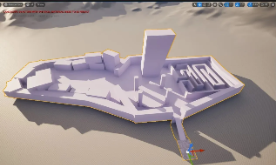
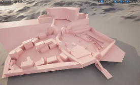
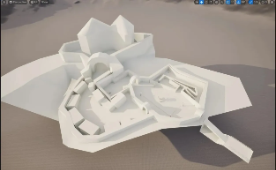
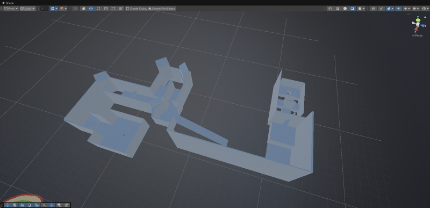
Lighting process
Before lighting the levels, I built a small test scene of light sources to pick a palette, then kept the approved ones and dropped the rest. The approved set became the standard I used in every room.
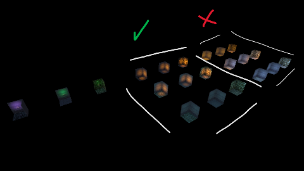
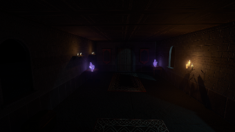
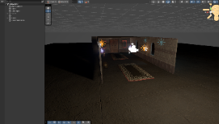
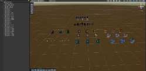
Final polish
In the final pass I lit and dressed every level, then checked them in-game from the player's eye level.
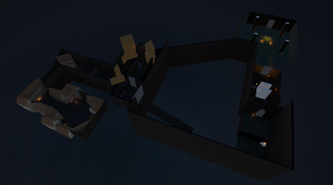
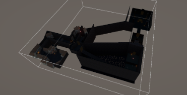
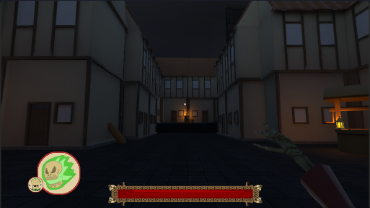
What I learned
2–3 lessons from leading a team of 10 while also designing every level, e.g. what you'd change in your blockout process or how you'd plan production differently.
Time spent
Rough split of your time across production, level design, lighting, and programming.